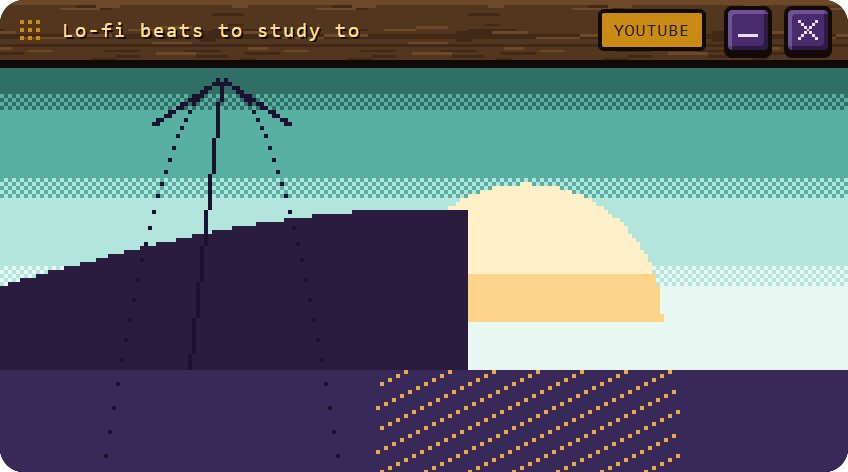

v2 · 22 Oct: a new hourglass you can see the sand in, it lies down when paused, click / hold / hover keys, a right-click menu, many timers, sounds that don't clash
What changed since v1: the old glass was pale, so the gold sand vanished into it. The new one is dark glass with bright sand, round bulbs, a dip that forms in the top, a hill that grows in the bottom, and a stream that's the brightest thing on it. It's bigger, with twice the grains, so it moves more often in smaller steps. Every hourglass on this page is live: hover, click, hold, scroll, right-click.
WHAT TO PICK 1 hourglass: A, B or C · 2 time's-up sound: A or B. I'd pick A and A.
Each one live, on its plate (real size, 2x), tiny (1x, for a strip), and close up (4x) so you can check every pixel. Same dark glass and sand in all three; only the frame changes.
Dark wood caps over turned posts, one small brass bead on each post. Calm: the only bright things are the sand and the time.
The same posts, the caps and beads in brass. Richer, but it's a lot of gold next to gold sand and gold numbers.
No posts: a wooden disc top and bottom, a brass knob. The glass is the whole thing. Lightest look, but less of your wood.
Click the glass and it tips onto its side with a soft spring (about half a second); the sand slides over in each bulb. Click again and it stands back up, and the sand runs on. It turns on the pixel grid, so it stays crisp the whole way round: no blur, no new colours.
Your idea, kept almost as is: click the glass to pause, hover for +1 / +5 / ✕, hold the glass to restart. Try it here first:
Every state, held still:
| DO THIS | IT DOES |
|---|---|
| Click the glass | Pause (it lies down) / go on (it stands up). When time's up: turn it over, same time again. |
| Hold the glass | A gold ring fills round it (0.6 s), then it turns right over and starts again. Let go early: nothing. |
| Hover | The keys slide in under it: +1, +5, ✕. |
| Hold ✕ | Stop. A click does nothing; holding fills the key, like your hotkeys. |
| Scroll on it | Up = one more minute, down = one less (Shift = five). A small "+1:00" shows. Never below 10 seconds. |
| Right-click | The menu: new timer, rename, restart, stop (section 4). |
| Drag | Moves it; it snaps to the other pop-outs, as today. |
Your Aang menu's look (the wood, the glove, the red last row), with the timer's own rows. Joined to a window, that window's rows come in below, so one right-click does both. Stop stays last, in red, and needs a hold.
Telling Aang still works too ("25 min pizza"). The menu is for when your hands are already on the timer.
As many as you like, each its own little window with its name on a nameplate and its own sand colour (gold, sea, plum), so you can tell them apart from across the room.

The last grains drip, the stream stops on 0:00, a glint runs over the pile, the plate hops once with the sound, and the keys stay up: Again (turns it over), +5, hold ✕. Aang's card still shows Got it / 5 more; either one works.
Yes, v1's did. Its time's-up climbed E-G-C on the same wooden bars as Job complete, and ended on the same note: you'd hear "job done" when it was the pizza. And today a timer plays the old needs-you, 10 dB louder than everything else. The fix: your chimes use C, D, E, G and A, and none of them repeats a note. So the timer gets the one note nobody uses, F, struck three times evenly, like a clock. Same wood, same level.
| SOUND | NOTES | LENGTH | PEAK | CLASH WITH THE TIMER? | |
|---|---|---|---|---|---|
| Job complete | C E G A G C | 1.5 s | -14 | v1 timer: same climb, same last note | |
| Question | G C D | 0.9 s | -14 | v1 bowl started on its G (mild) | |
| Permission | G D G | 0.8 s | -14 | v1 bowl's G again (mild) | |
| Plan ready | E D G | 0.9 s | -14 | no | |
| Step | one C tick | 0.3 s | -20 | v1 flip / notch were ticks too; now lower and quieter | |
| Failed | D A, low | 0.9 s | -14 | no | |
| Needs you (the one you picked) | E A E | 1.0 s | -14 | v1 flip's knock sat on its A (mild) | |
| Done (the one you picked) | G C | 0.85 s | -14 | no | |
| Today's old needs-you (what a timer plays NOW) | a rising A | 0.9 s | -5 | 10 dB louder than the set; also means "needs you" | |
| v1 timer A (dropped) | E G C | 1.7 s | -14 | sounds like Job complete | |
| New timer A: clock strike | F F F | 1.5 s | -15 | nothing else uses F or repeats a note | |
| New timer B: bowl | one low F | 2.6 s | -14 | moved off G, shortened | |
| A, a minute later | F F F, high F | 1.9 s | -12 | no | |
| Turning it over | low F knock + pour | 0.6 s | -20 | low and hollow; Step is a high tick | |
| Scroll notch | tiny high F | 0.07 s | -26 | quietest in the set (v1's was out of key) |
Measured from the files: notes by pitch tracking, peak in dBFS. The new A's loudness (RMS) sits inside the family's range. Pressing a timer A/B play key also makes it the sound in section 6.
When a game is in front, the stream stands still and only the grains drop, once per grain. Left: at the desk. Right: in a game.
| MEASURED ON YOUR PC (v1 engine, one timer window) | MEMORY | CPU |
|---|---|---|
| Today's timer | 63-75 MB | 0.31-0.35% |
| New sand, at the desk | 31 MB | 0.16-0.18% |
| New sand, in a game | 31-33 MB | 0.02% |
v2 paints the same way (one small picture, only when a grain moves). A turn is about 30 small frames, only while it turns. Re-measured when it's built.